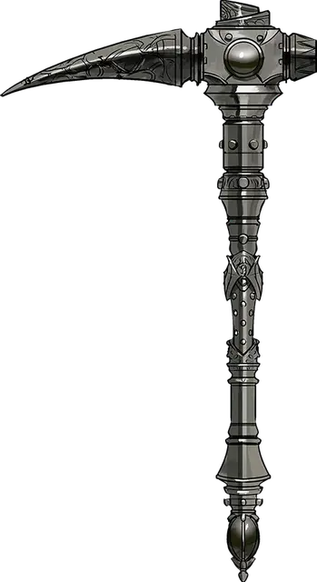

Железный клык
Ironfang
Оружие (боевая кирка), легендарное (требуется настройка)

Рекомендованная стоимость от 50 001 зм
Сделанная из цельного куска железа, боевая кирка Железный Клык обладает похожим на длинный клюв остриём, покрытым древними рунами. Сперва кирка кажется тяжёлой, но когда её владелец начинает в ярости размахивать ей, то она становится почти невесомой. Это оружие обладает иммунитетом к коррозии, неуязвимо к воздействию кислоты — ничто не может испортить его, поскольку Железный клык несёт в себе часть силы Огремоха, Принца Злой Земли.
Вы получаете +2 к броскам атаки и урона этим магическим оружием. При попадании цель получает дополнительный урон звуком 1к8.
Власть над землёй. Если вы вооружены Железным клыком, то получаете следующие преимущества:
- Вы свободно говорите на Терране.
- Вы обладаете сопротивлением урону кислотой.
- Вы получаете чувство вибрации в радиусе 60 футов
- Вы чувствуете залежи драгоценных камней и металлов в 60 футах от вас, но не знаете их чёткого местоположения.
- Вы можете наложить заклинание подчинение чудовища [dominate monster] (Сл спасброска 17) на земляного элементаля [earth elemental]. Если вы наложили это заклинание, то не сможете вновь использовать данное свойство до следующего рассвета.
Дребезги. Железный Клык содержит 3 заряда. Вы можете действием потратить один заряд и наложить заклинание дребезги [shatter] (Сл спасброска 17). Считается, что заклинание тратит ячейку 2 уровня. Железный клык восстанавливает 1к3 заряда ежедневно на рассвете.
Грохот. Находясь в элементальном узле земли, вы, с помощью Железного клыка, можете совершить ритуал под названием «Грохот», который позволит вам создать земляную сферу опустошения [devastation orb of earth] (см. описание сфер опустошения для информации о времени и стоимости ритуала). После окончания ритуала, вы не сможете повторить его до следующего рассвета.
Слабость. Железный клык пробуждает разрушительную природу своего владельца. Пока существо настроено на это оружие, оно получает следующую слабость: «Я люблю ломать и разрушать всё вокруг».